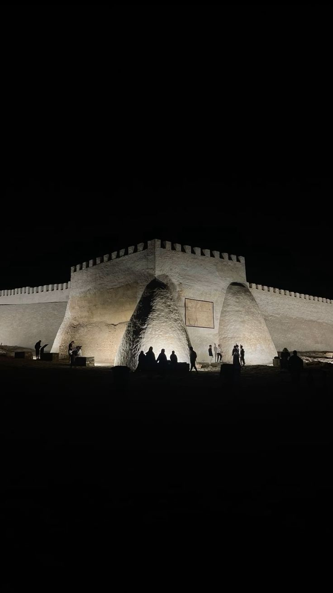
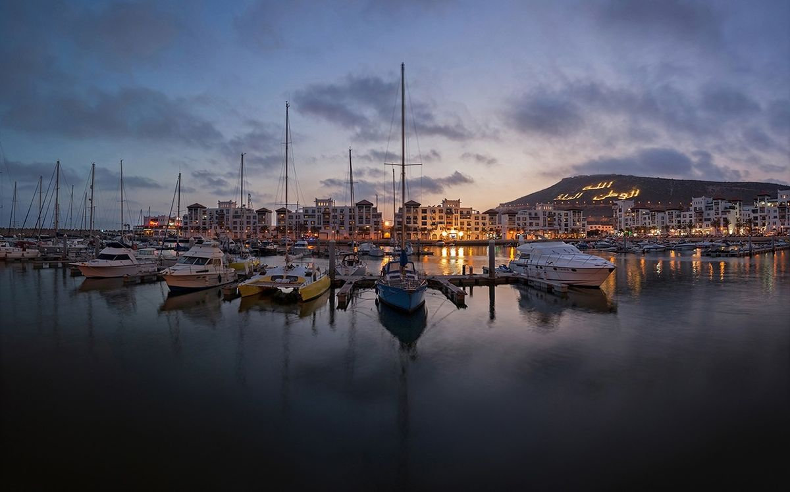
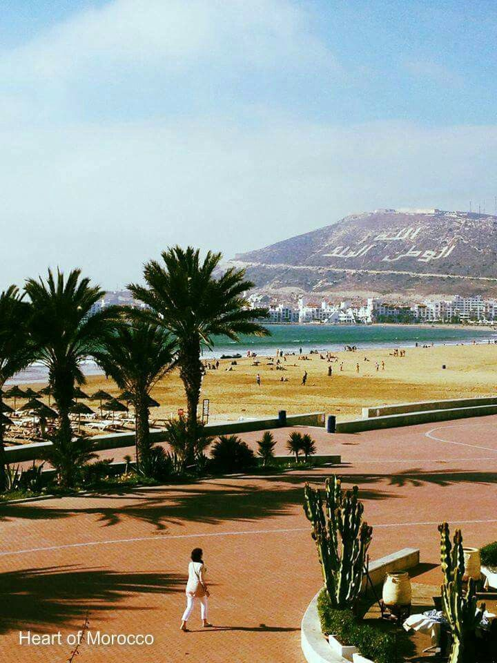

Lieux Incontournables
Explorez les merveilles emblématiques de Agadir.

La Kasbah (Agadir Oufella)
L'ancienne forteresse construite en 1540 pour protéger la ville des invasions maritimes. Bien que ses remparts aient été touchés par le séisme de 1960, le site offre aujourd'hui le plus beau point de vue panoramique sur toute la baie et le port d'Agadir.
Localiser
Souk El Had
C'est l'un des plus grands marchés couverts d'Afrique. Avec ses 6000 boutiques entourées de remparts, c'est le cœur bouillonnant de la ville. On y trouve de tout : épices parfumées, huile d'argan, maroquinerie, artisanat berbère et produits frais.
Localiser
La Marina
Située au bout de la promenade en bord de mer, la Marina est le port de plaisance huppé d'Agadir. Bordée de palmiers, elle regorge de boutiques de luxe, de glaciers et de terrasses ensoleillées face aux luxueux yachts.
Localiser
La Corniche et la Plage
Avec plus de 10 km de sable fin, la plage d'Agadir est classée parmi les plus belles du monde. La longue promenade aménagée (Corniche) est parfaite pour le footing matinal, les balades à vélo ou une marche nocturne apaisante.
Localiser